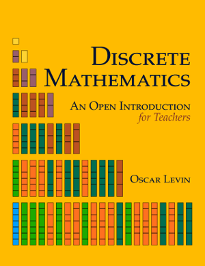

<!-- About/info -->
  <section class="section">
    <div class="container">
      <div class="columns is-variable is-8">
        <div class="column is-3 has-text-centered">
          <div class="content">
          <p></p>
            <!-- <p>
              <a class="button is-info is-outlined is-fullwidth" href="./ctgd/ctgd.html"><span class="icon is-small"><i class="fa fa-book"></i> </span><span>Read online</span></a>
            </p> -->
            <p >
              <a class="button is-info is-outlined is-fullwidth" href="https://amzn.to/2rV2Ry6" target="_blank"><span class="icon is-small"><i class="fab fa-amazon"></i> </span> <span>Buy paperback</span></a>
            </p>
            <p >
              <a class="button is-info is-outlined is-fullwidth" href="./pdf/dmoi-t.pdf"><span class="icon is-small"><i class="fas fa-book"></i><span>+</span><span class="icon is-small"><i class="fas fa-pencil-alt"></i></span><span>Download full PDF</span></a>
            </p>
        </div>
      </div>
        <div class="column">
          <div class="content">

          <h3>About the book</h3>
          <p>
            This is a custom version of <em>Discrete Mathematics: an Open Introduction</em>, designed for use in a discrete math course for future elementary and middle school teachers specializing in mathematics.
          </p>

          
            
          <h3>Get the book</h3>
          <p>
            A inexpesive print version of the text is available on <a href="https://amzn.to/2Lb9tS0" target="_blank">Amazon</a>.  This should be cheaper than printing the entire book and binding it yourself.
          </p>
          
          <p>
            If you would like to print just what you need, or if you would like to view the book electronically, you can download the full pdf of the book, or the pdfs of the primer and workbook separately:
          </p>
          <ul>
            <li><a href="./pdf/dmoi-t.pdf">PDF</a>.
          </ul>
          <p>
            Note that the page numbers for the workbook (both as part of the full pdf and stand alone file) do not match the print edition.  This is because the printed version has the workbook printed one sided to allow extra room to work, but the pdfs do not have this (you can choose to print one- or two-sided at your descretion).
          </p>
          <h4>PreTeXt (and LaTeX) source</h4>
          <p>
            The source filess for this book are available on <a href="https://github.com/openmathbooks/somealgebra" target="_blank">GitHub</a>.
          </p>
          
        </div>


            </div>
          </div>
        </div>
      </div>
    </section>


  <!-- CTA buttons: -->
  <!-- <section class="section">
    <div class="container">
      <div class="level">
        <div class="level-item has-text-centered">
          <a class="button is-link" href="./ctgd/">Read online</a>
        </div>
        <div class="level-item has-text-centered">
          <a class="button is-link" href="./pdf/bogart.pdf">Download ebook</a>
        </div>
        <div class="level-item has-text-centered">
          <a class="button is-link" href="http://amzn.to/2CvXJbh">Purchace paperback</a>
        </div>
      </div>
    </div>
  </section> -->
